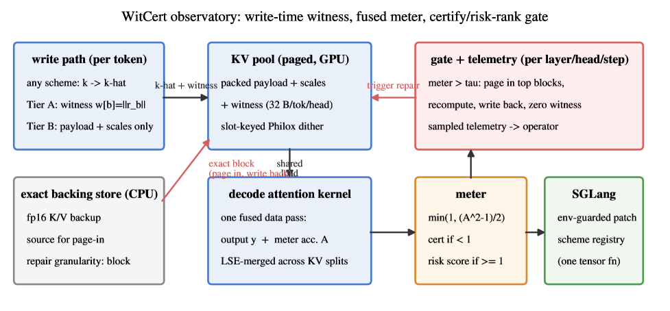
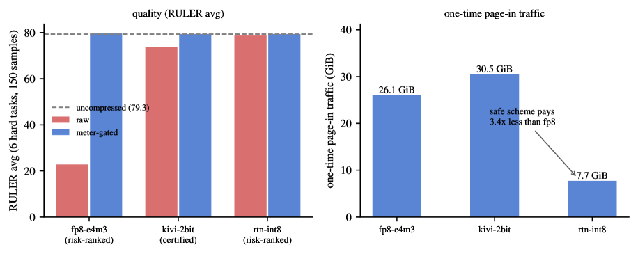

Core soundness theorems for the KV-cache quantization total-variation bound are machine-checked in Lean 4 using Mathlib.
Abstract
KV-cache quantization is validated today by offline benchmark averages; a deployed system cannot tell whether compression is damaging the request it is serving right now. We give it a provably sound runtime meter, a "DTrace for KV quantization": a per-(layer, head, step) upper bound on the total variation between exact and compressed attention. The meter has two tiers: a deterministic band-norm-witness bound, sound for any cache-preserving black-box quantizer and for any query (adaptive-safe, worst-case Cauchy-Schwarz plus RoPE band-unitarity), and a tighter probabilistic certificate for a controlled subtractively-dithered INT8 quantizer under an explicit request-level failure budget (stated for non-adaptive queries; core theorems machine-checked in Lean 4). Three results. Observability: the meter enters SGLang through an environment-guarded patch, and any scheme registered as one tensor function is measured in live serving. Repair: meter-driven gating, risk-ranked where the witness is saturated and certified where it is informative, empirically restores the quality floor at benchmark scale. For example, raw-cast FP8 improves from 22.8 back to 79.7 on hard RULER tasks, with the difference from uncompressed bounded at [+0.0, +0.8] by a paired test. Analysis: aggressive schemes survive on cross-layer error cancellation, not per-step fidelity. In a 28-layer sweep, no single layer's pollution alone loses anything (0/28), and the certified INT8 cache serves 1.88 times more KV tokens at the same memory in SGLang.
Problem
KV-cache quantization for LLM inference is validated only by offline benchmark averages, giving deployed systems no way to observe whether compression is damaging the request currently being served. A prior worst-case runtime certificate is too conservative to authorize any practical compression.
Approach
A two-tier runtime meter provides a sound per-(layer, head, step) upper bound on the total variation between exact and compressed attention. Tier A is a deterministic band-norm-witness bound valid for any cache-preserving black-box quantizer, using RoPE band-unitarity and Cauchy-Schwarz. Tier B is a tighter probabilistic sub-Gaussian certificate for a subtractively-dithered INT8 quantizer under a request-level failure budget. The meter drives gating that pages in exact keys where risk is high, and the core theorems are machine-checked in Lean 4 with Mathlib.

Figure 2: The WitCert observatory. Any scheme’s residual leaves a witness at write time; the decode kernel computes output and meter in one fused data pass (LSE-merged across KV splits); the gate repairs at block granularity from the exact backing store and zeroes the repaired witnesses; SGLang integration is a bit-identical-when-off env-guarded patch.
Results
Meter-driven gating restores quality (raw-cast FP8 improved from 22.8 to 79.7 on hard RULER tasks, difference from uncompressed bounded at [+0.0,+0.8]). The certified INT8 cache serves 1.88x more KV tokens at the same memory in SGLang, and the certificate reduces page-in rate by 28.7-77.0% relative to the deterministic tanh bound.

Figure 5: Meter gating at benchmark scale (labels per Sec. 4.3 : risk-ranked at \tau{\geq}1 , certified at \tau{<}1 ): quality floor empirically restored (left; a benchmark outcome, not a corollary of the TV bound); one-time page-in traffic under incremental persistent repair (right)—the safe scheme pays 3.4\times less than the broken one.
Model
Domain
δ=1e-2
tanh (δ=0)
Qwen2.5-7B
natural
0.809
0.167
Qwen2.5-7B
needle
0.810
0.485
Mistral-7B
needle
0.653
0.513
Yi-1.5-6B
needle
0.648
0.417
Risk-coverage curve: joint K+V step coverage vs. request-level budget (tanh is delta=0 reference)